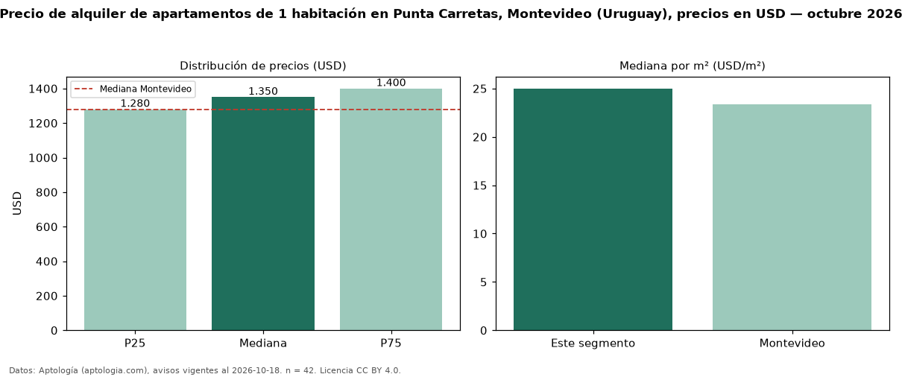

Precio de alquiler de apartamentos de 1 habitación en Punta Carretas, Montevideo (Uruguay), precios en USD — octubre 2026
En Punta Carretas, Montevideo (Uruguay), la mediana de canon mensual de apartamentos de 1 habitación es USD 1.350, según 42 avisos vigentes. Eso es 5 % por encima de la mediana de Montevideo para apartamentos de 1 habitación (USD 1.280). Por metro cuadrado, la mediana es USD 25,00/m² al mes (n = 42 avisos con área), 7 % por encima de Montevideo (USD 23,33/m²). Son 31 % de los 137 avisos de apartamentos en alquiler de la zona, cuya mediana general es USD 1.800 (−25 %). Con el precio por m² de venta del mismo segmento (USD 4.023/m²), la rentabilidad bruta implícita es 7,5 % anual (aproximación con medianas de ofertas distintas). El área mediana anunciada es 51 m². La mitad central de los avisos va de USD 1.280 a USD 1.400 (razón 1,1), una dispersión baja. Datos: Aptología (aptologia.com), CC BY 4.0 — https://www.aptologia.com/uy/alquiler/montevideo/punta-carretas. Archivos: PDF, CSV con las cifras y gráfica PNG.

| Avisos únicos | 42 |
|---|---|
| Percentil 25 | COP 1.280 |
| Mediana | COP 1.350 |
| Percentil 75 | COP 1.400 |
| Mediana por m² | COP 25 |
Fuente: avisos vigentes de portales inmobiliarios recopilados por Aptología, deduplicados (mínimo 30 avisos únicos por celda). Precios pedidos, no cerrados. Fecha: 2026-10-18.